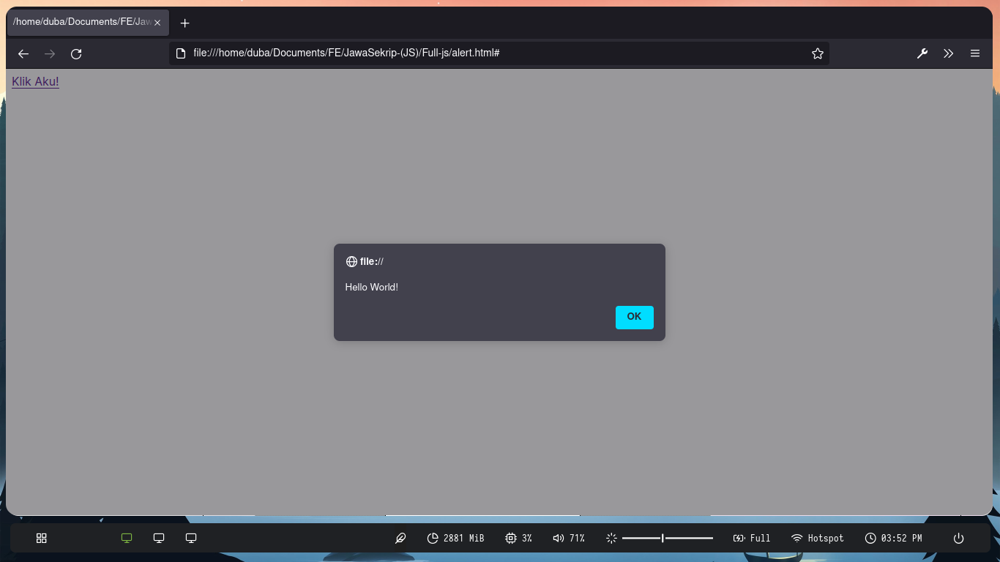

JavaScript adalah bahasa pemrograman tingkat tinggi dan dinamis. JavaScript populer di internet dan dapat bekerja di sebagian besar penjelajah web populer seperti Google Chrome, Internet Explorer, Mozilla Firefox, Netscape dan Opera. Kode JavaScript dapat disisipkan dalam halaman web menggunakan tag SCRIPT. Wikipedia
JavaScript adalah bahasa pemrograman yang paling banyak digunakan dalam pengembangan website, aplikasi, game, dan lainnya. Bahkan, produk dari perusahaan besar seperti Google, Facebook, dan LinkedIn juga telah menggunakan JavaScript.
Jika Anda menguasai JavaScript, Anda bisa membuat website lebih menarik dan membuat pengunjung betah. Bahkan, Anda juga dapat mengembangkan game online berbasis web yang populer di kalangan anak muda.
Seiring perkembangannya, JavaScript tak hanya bisa digunakan di sisi client, tetapi juga di sisi server. Eksekusi bahasa pemrograman ini di sisi server dapat dilakukan dengan memanfaatkan platform framework JavaScript seperti Node.js, React.js, dan lainnya.
Langsung saja, yuk simak pembahasannya! Niagahoster
Variabel
Variabel seperti class pada HTML, yakni membuat memori yang nantinya berisi value.
Tag HTML bisa dideklarasikan pada document.writeln(), dan untuk syntax seperti tanda dolar $ dan kurung kurawal {} yang digabungkan berguna untuk memanggil variabel. Tanpa menggunakan syntax tersebut pun masih bisa memanggil variabel dengan hanya ketik nama deklarasi variabel yang telah dibuat, asalkan tidak menggunakan tanda kode string seperti "" dan '' kecuali tanda petik seperti ini ``
var variabel yang sudah tidak direkomendasikan lagi, karena tidak bisa local scope function, dan bisa direplika pada deklarasi yang sama
let sama seperti var, let juga bisa direplika, tetapi jenis variabel ini bisa di semua scope,
const variabel jenis ini bisa di semua scope dan sama sekali tidak bisa direplika.
Contoh penggunaan variabel sebagai berikut.
Output:
Bisa menambahkan elemen lagi seperti ini:
Operator Aritmatika
Operator Aritmatika adalah melakukan operasi perhitungan aritmatika, seperti pertambahan, pengurangan, dsb.
Output:
Operator Unary
Operator Unary adalah operator yang biasanya membutuhkan satu data saja pada tipe data number. Operator Unary memiliki empat operator, diantaranya:
1. Positive
Digunakan untuk menandai bahwa tipe data ini positif, dengan mengetik + saja, lihat gambar dibawah.
Output:
100
2. Negative
Digunakan untuk menandai bahwa tipe data ini negatif, dengan mengetik - saja, lihat gambar dibawah.
Output:
-100
3. Increment
Increment adalah jika kita ketik ++ hasilnya akan bertambah satu seperti gambar dibawah ini.
Output:
4. Decrement
Increment adalah jika kita ketik -- hasilnya akan berkurang satu seperti gambar dibawah ini:
Output:
Operator Perbandingan
Operator relasi atau perbandingan adalah operator yang digunakan untuk membandingkan dua nilai. Operator perbandingan akan menghasilkan sebuah nilai boolean true dan false.
Definisi jenis operator perbandingan:
> : lebih dari
< : kurang dari
= atau == : sama dengan
!= atau !== : tidak sama dengan
Output:
Operator Bitwise
Operator Bitwise digunakan secara khusus untuk melakukan proses logika, dimana nilai atau operand yang diolah adalah bilangan biner. Bilangan Biner adalah bilangan yang hanya terdiri dari 2 angka yaitu angka 0 dan 1. Jenis-jenis dan simbol operator bitwise:
AND = &
OR = |
XOR = ^
NOT = ~
1. AND
Operand AND adalah mengatur setiap bit ke 1 jika kedua bit sama-sama 1.
Output:
2. OR
Operand OR adalah mengatur setiap bit ke 1 jika salah satu dari dua bit adalah 1.
Output:
3. XOR
Ketika operasi bitwise XOR dilakukan pada sepasang bit, ia mengembalikan 1 jika bit berbeda.
Output:
4. NOT
Ketika operasi bitwise NOT dilakukan maka akan membalikan kedua nilai yang semula 1 menjadi 0.
Output:
Function
Fungsi adalah sub-program yang bisa digunakan kembali baik di dalam program itu sendiri, maupun di program yang lain.
Bisa diibaratkan kamu membuat kue, namun kue itu ingin dihidangkan pada saat malam hari walaupun kamu membuatnya pagi-pagi buta. Function pada javascript ini juga sama kasusnya seperti kue tadi, kamu membuat program yang terencana lalu mengeksekusinya sesuka hati dimanapun dan kapanpun.
Fungsi di dalam Javascript adalah sebuah objek, karena memiliki properti dan juga method. Bagi pemula konsep ini cukup membingungkan. Petani Kode
Ada 2 Cara Membuat Fungsi di Javascript
a. Menggunakan cara biasa b. Meggunakan ekspresi c. Menggunakan tanda panah
A. Membuat Fungsi Dengan Cara Biasa
Cara ini paling sering digunakan, terutama buat yang baru belajar Javascript.
B. Membuat Fungsi Dengan Ekspresi
Kita menggunakan variabel, lalu diisi dengan fungsi. Fungsi ini sebenarnya adalah fungsi anonim (anonymous function) atau fungsi tanpa nama.
C. Membuat Fungsi Dengan Tanda Panah
Cara ini sering digunakan di kode Javascript masa kini, karena lebih sederhana. Akan tetapi sulit dipahami bagi pemula. Fungsi ini mulai muncul pada standar ES6.
Contoh:
Cara Memanggil atau Mengeksekusi Fungsi
Setelah mengetahui cara membuat fungsi, lalu bagaimana cara memanggilnya? kita bisa memanggil fungsi di dalam kode Javascript dengan menuliskan nama fungsinya seperti ini:
namaFungsi()
Contoh:
Output:
Selain dengan cara di atas, kita juga bisa memanggil fungsi melalui atribut event pada HTML.
Hasilnya:

Function Dengan Parameter
Parameter adalah variabel yang menyimpan nilai untuk diproses di dalam fungsi.
Contoh:
Output:
Pada contoh di atas, a dan b adalah sebuah parameter.
Kita memberikan 3 untuk parameter a dan 2 untuk parameter b.
Function Yang Mengembalikan Nilai
Agar hasil pengolahan nilai di dalam function dapat digunakan untuk proses berikutnya, maka fungsi harus mengembalikan nilai.
Pengembalian nilai pada function menggunakan kata kunci return kemudian diikuti dengan nilai atau variabel yang akan dikembalikan.
Contoh:
return dengan 2 parameter
Output:
return dengan 1 parameter (lebih simpel)
Contoh:
Output:
Array
[] Array merupakan struktur data yang digunakan untuk menyimpan sekumpulan data dalam satu tempat. Setiap data di dalam array memiliki indeks, sehingga kita mudah memprosesnya.
Setiap data dalam Array memiliki indeks, sehingga kita akan mudah memprosesnya. Indeks dalam array dimulai dari angka [0].
Dapat disimpulkan bahwa Array dapat menggantikan variabel yang menampung banyak value, daripada membuat variabel dengan banyak deklarasi dan value itu akan memakan waktu lama, tidak efisien, dan memakan memori terlalu banyak.
Contoh Array:
Output:
Kita bisa menggunakan tanda , untuk menambahkan value tipe data di dalam bracket yang sama. Oh iya karena Javascript merupakan pemrograman yang dynamic typing, maka kita bisa mencmpuri semua tipe data dalam Array:
Contoh:
Output:
Cara Mengambil/Mengindex Data Pada Array
Array akan menyimpan sekumpulan data dan memberinya nomer indeks agar mudah diakses. Perlu diingati indeks array selalu dimulai dari angka nol [0].
Contoh:
Output:
Menggunakan Array Method
Di javascript sudah disediakan build-in function(method) untuk mengelola data pada array. Matawebsite
Method pada Array adalah suatu kode indeks yang memudahkan pengguna mengelola data pada Array agar lebih kompleks dan terstruktur. Dibawah ini adalah kisi-kisi method array javascript:
1. Slice
Method Array.slice() digunakan untuk ’memotong’ array menjadi array baru, atau menjadi ’sub-array’ dari array asal. Method slice() ini membutuhkan 2 buah argumen yang berisi posisi index awal dan akhir pemotongan.
Contoh:
Output:
2. Push
Method Array.push() digunakan untuk menambahkan elemen/value pada akhir array.
Contoh:
Output:
3. Pop
Method Array.pop() adalah menghapus elemen terakhir dari array.
Contoh:
Output:
4. Shift
Method Array.shift() adalah menghapus elemen paling awal dari array.
Contoh:
Output:
5. Unshift
Method Array.unshift() adalah menambahkan elemen paling awal dari array.
Contoh:
Output:
6. Join
Method Array.join() adalah menggabungkan elemen array menjadi sebuah string, Array.join() harus ditempatkan pada output javascript seperti document.writeln() atau console.log()
Contoh:
Output:
8. Sort
Method Array.sort() digunakan untuk mengurutkan elemen pada array baik ascending maupun descending atau lebih dikenal dengan dari kecil ke besar dan dari besar ke kecil.
Contoh:
Output:
Lihat, hasilnya tak sesuai yang diperkirakan karena 2 lebih besar daripada 1, jadi hasilnya tak berurutan. Kita bisa memanfaatkan function agar lebih berurutan seperti gambar dibawah ini.
Pengurutan ke ascending (dari terkecil ke terbesar):
Output:
Pengurutan ke Descending (dari terbesar ke terkecil):
Output:
Output:
Object
Di bahasa pemrograman lain seperti PHP, kita bisa menggunakan index berupa tipe data lain selain number, misalnya string.
Fitur ini biasanya disebut Associative String, tetapi di Javascript tidak didukung. Oleh karena itu, kita bisa memanfaatkan tipe data object. Programmer Zaman Now
Tipe data object adalah tipe data yang mirip dengan tipe data Array.
Yang membedakan adalah index pada tipe data object adalah bisa menggunakan string
Index di object biasanya disebut attributes, bukan index.
Tipe data object berisi data yang banyak dalam Variabel sama halnya dengan Array, akan tetapi object lebih kompleks dan lebih bersifat bebas mengekspresikannya. Perbedaan simbolnya ialah Array = [], dan Object = {}
Contoh:
Sc untuk output objectnya:
Output:
Perlu diketahui untuk mengambil data dari variabel identitas menggunakan . pada kata setelah variabelnya, contoh identitas.Nama maka menghasilkan Budi.
Percabangan
Apa itu percabangan?, dan kenapa disebut percabangan?
Percabangan sama halnya dengan algoritme dan flowchart. Percabangan akan mampu membuat program berpikir dan menentukan tindakan sesuai dengan logika/kondisi yang kita berikan.
Contoh flowchart sama persis apa yang dilakukan percabangan:
Pada pemrograman Javascript, terdapat 6 bentuk percabangan yang harus kita kitahui. Petani Kode
1. Percabangan if
Percabangan if merupakan percabangan yang hanya memiliki satu blok pilihan saat kondisi bernilai benar atau true.
Disini saya akan memberikan contoh sebuah nilai ulangan:
Contoh:
Output:
Perulangan atau Looping
Syarat bahasa pemrograman adalah mampu menangani proses-proses secara dinamis, termasuk pada loop atau perulang pada javascript bertujuan untuk mengulangi instruksi hingga pada kondisi tertentu terpenuhi maka perulangan berhenti.
Sebagai contoh kita ingin menampilkan angka 1 sampai 100, betapa melelahkan jika kita harus mengetik manual angka 1 sampai 100. Disinilah perulangan dapat mempersingkat waktu penulisan angka-angka tersebut. Bahasaweb
Misalnya juga anda masih sekolah dan anda terkena hukuman karena terlambat masuk kelas, lalu guru anda memberikan hukuman dengan menulis "saya berjanji tidak akan mengulanginya lagi" sebanyak 100 kali, pasti capek dan membuat tangan anda pegal, kecuali kalo memang situ hobi menulis. Nah, di javascript ini ada yang namanya Perulangan
Secara umum ada 5 jenis perulangan namun dibagi menjadi 2 bagian yaitu, Counted Loop dan Uncounted Loop:
Apa perbedaannya?
Counted Loop merupakan perulangan yang jelas dan sudah tentu banyak perulangannya. Yang termasuk Counted Loop:
Perulangan For
Perulangan forEach
Perulangan Repeat
Uncounted Loop merupakan perulangan yang tidak jelas berapa kali ia harus mengulang. Yang termasuk Uncounted Loop:
Perulangan While
Perulangan Do While
- Perulangan yang berjenis Counted Loop:
1. For
Perulangan for merupakan perulangan yang termasuk dalam counted loop, karena sudah jelas berapa kali ia akan mengulang.
Contoh:
Output:
Kondisi ini akan menentukan:
Hitungan akan dimulai dari 0 (i = 0);
Hitungannya sampai berapa? Sampai i < 10;
Lalu di setiap perulangan i akan bertambah +1 (i++).
Variabel i pada perulangan for berfungsi untuk menyimpan nilai hitungan.
Jadi setiap perulangan dilakukan nilai i akan selalu bertambah satu. Karena kita menentukannya di bagian i++.
Bagaimana kalau perulangannya ingin dimulai dari angka yang terbesar dulu baru terkecil?
Variabel di dalam for tidak harus selalu i bebas mengisikannya.
Contoh:
Output:
Mengapa tidak sampai nol (0)?
Karena kondisi yang kita berikan hitungMundur > 0. Apabila hitungMundur bernilai 0, maka kondisi ini akan menjadi false.
Kecuali kita menggunakan operator lebih besar sama dengan (>=), maka jika hitungMundur bernilai 0, kondisi akan menjadi true.
2. forEach
Perulangan forEach biasanya digunakan untuk mencetak item di dalam array.
Perulangan ini termasuk dalam perulangan counted loop, karena jumlah perulangannya akan dituentukan oleh panjang dari array.
Ada dua cara menggunakan perulangan forEach di Javascript: